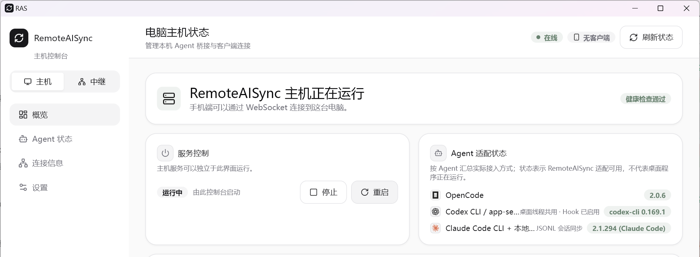
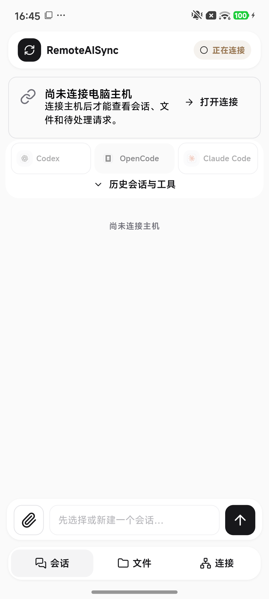

会话控制
新建或继续会话，查看回复、工具调用、审批和提问状态。
从手机或浏览器继续使用本机的 OpenCode、Codex 与 Claude Code。项目文件和 Agent 运行在你控制的电脑或服务器上。


同一局域网时直接连接主机。异地访问时，可让主机主动连到你自己的 Relay；如果 Agent 本来就运行在公网服务器，也可以直接使用 WSS。
RemoteAISync 连接的是你已经在使用的 Agent 和项目目录。手机负责查看、发送和审批，主机继续负责执行。
新建或继续会话，查看回复、工具调用、审批和提问状态。
从手机选择文件，传到主机工作区，再交给对应 Agent 处理。
连接路线、主机状态和 Agent 可用性在同一套界面里保持可见。
Windows 主机 GUI、Ubuntu 无头运行时和 Web / Android 客户端共享同一套连接与配对逻辑。
主机或中继模式。适合本地开发、局域网配对和桌面管理。
Flutter GUI同一软件以无头模式运行，可交给 systemd 管理并放在公网服务器。
host / relay扫码导入配对信息，局域网优先，中继兜底，保留手动配置。
client中继只负责转发连接。主机注册码、房间凭据和设备凭据分开管理；首版默认信任自建中继，后续再独立设计端到端加密。
从项目仓库开始：查看部署方式、Windows 开发启动步骤，或构建 Android 客户端。